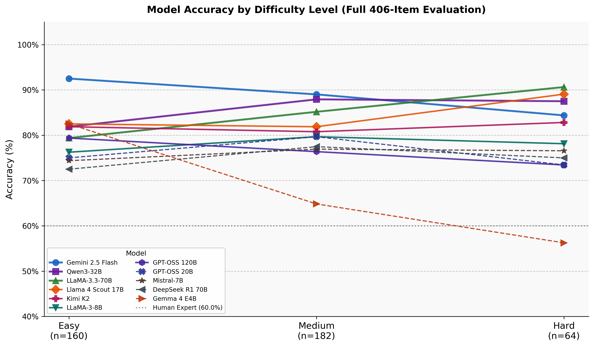
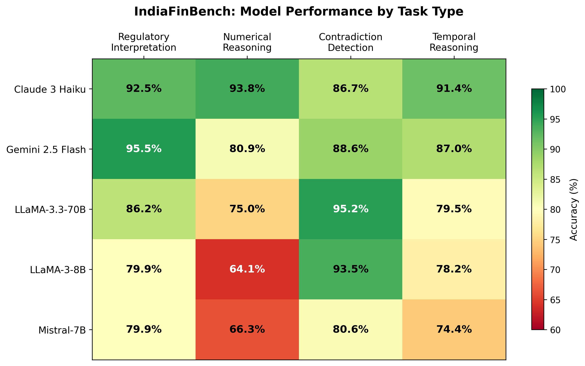
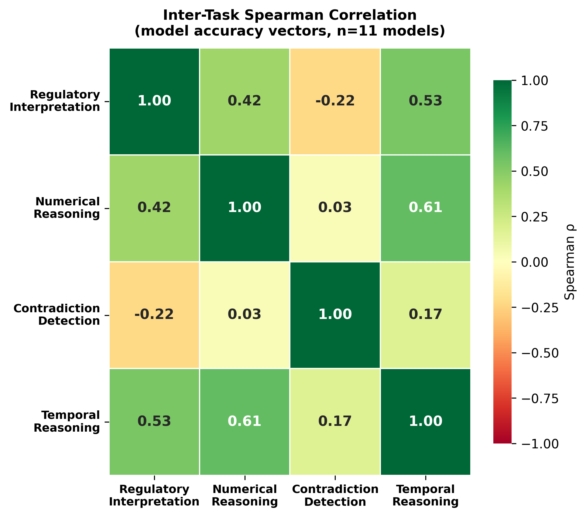

A reproducible benchmark for LLM performance on Indian financial regulatory text — SEBI circulars and RBI master directions.
All 12 models scored above the human-expert line — Gemini cleared it by 20.7 points
Large language models are increasingly asked legal and financial questions, but nearly all of their testing uses American and European text. This benchmark tests twelve leading models on India's actual financial rulebook — SEBI and RBI regulations spanning 1992 to 2026 — with 406 questions written and verified by hand. The questions require exactly what real compliance work requires: interpreting rules, calculating with legal thresholds, spotting contradictions, and tracking rules that changed over time. The clearest finding: numbers are the hardest. On numerical reasoning alone, model scores spread by 36 points.
No public benchmark existed for how LLMs handle Indian financial regulatory text — a domain dense with numerical thresholds, cross-references, and temporal amendments where a confident wrong answer is costly.
From 192 SEBI/RBI documents I built 406 expert-annotated QA items across four task types — regulatory interpretation, numerical reasoning, contradiction detection, and temporal reasoning — with three-round inter-annotator agreement. Twelve LLMs are scored closed-book with bootstrap significance and Wilson confidence intervals, plus a hybrid BM25+dense RAG demo.
Every model clears the 69% human-expert baseline; Gemini 2.5 Flash leads at 89.7%, with statistically distinct performance tiers. Numerical reasoning is the most discriminative axis — it alone spreads the twelve models by 35.9 points. Hybrid RRF retrieval lifts Recall@5 to 0.785 (+9.7 pp over dense-only). The benchmark and leaderboard are live on HuggingFace for reproducible evaluation.
What the benchmark asks (items per task type)
Strict accuracy, selected models (%)
Numerical reasoning alone spreads models by 35.9 points.



It extends deployment-aware evaluation to LLMs and an underrepresented jurisdiction — with the dataset, leaderboard, and live retrieval demo all public, so every claim can be re-run.